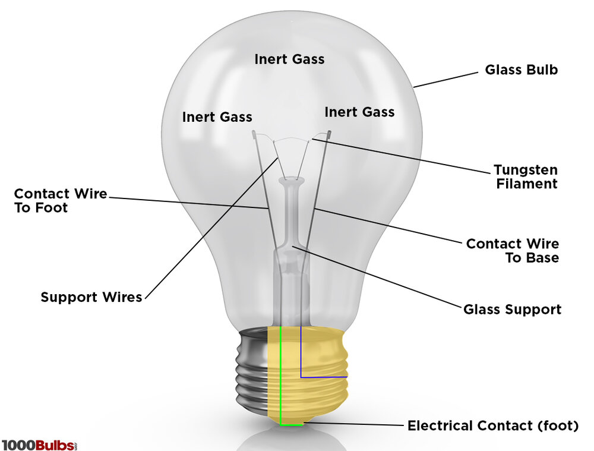

Light Bulbs convert electricla energy to An electric current is passed through a thin metal filament, heating the filament to a high temperature until it glows and produces light.
After the electricity has made its way through the tungsten filament, it goes down another wire and out of the bulb via the metal portion at the side of the socket.
"When the battery's terminals are connected through the light bulb, a pathway is created for charge to flow. Negatively charged electrons flow from the - terminal to the + terminal through the light bulb. This flow of charge converts chemical potential energy into electrical energy."(https://courses.engr.illinois.edu)
